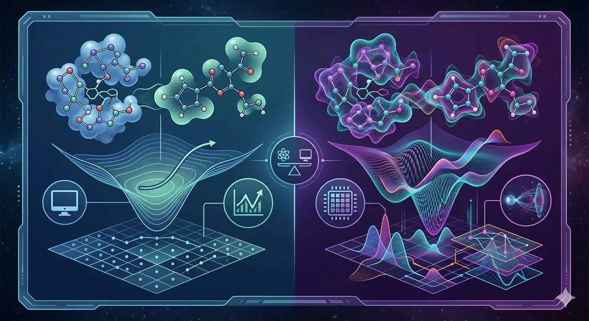

For decades, quantum computing existed primarily in research labs and theoretical papers—a fascinating technology perpetually "10-15 years away" from practical applications. 2026 changes that narrative fundamentally. IBM has publicly stated this is the year quantum computers will demonstrably outperform classical computers on real-world problems for the first time.
But quantum computing alone isn't the full story. The breakthrough moment comes from convergence: quantum computing accelerating AI, and AI optimizing quantum systems. This symbiotic relationship is unlocking capabilities impossible with either technology independently—and the implications for enterprise computing, drug discovery, financial modeling, and materials science are profound.
We're entering a "years, not decades" era where quantum machines will start tackling problems classical computers can't solve—and the organizations exploring quantum-enhanced AI today will lead tomorrow's markets.
Understanding Quantum Advantage: The 2026 Milestone
"Quantum advantage" (sometimes called "quantum supremacy") refers to the point where a quantum computer can solve a problem better, faster, or more accurately than all classical computing methods combined. Not just faster than one classical computer—faster than any conceivable classical approach.
IBM's 2026 Quantum Advantage Commitment
IBM announced it's on track to demonstrate verified quantum advantage by the end of 2026 using its new 120-qubit Nighthawk processor. This isn't about solving abstract mathematical problems—it's about demonstrable advantages on real-world computational challenges in:
- Drug development: Simulating molecular interactions too complex for classical computers
- Materials science: Discovering new compounds with specific properties
- Financial optimization: Portfolio optimization considering exponentially more scenarios
- Supply chain logistics: Route optimization across massive networks with complex constraints

Modern quantum processors operate at near absolute zero, manipulating quantum states to perform calculations impossible for classical computers
Google's 13,000x Speedup
Google's quantum systems have demonstrated computational speedups exceeding 13,000 times classical approaches on specific optimization problems. While these initial demonstrations involved specialized tasks, they validate the fundamental quantum advantage thesis and point toward broader applications.
What Makes This Different From Previous Claims
Earlier "quantum advantage" claims focused on artificial benchmark problems designed to favor quantum systems. 2026's milestone is different:
- Problems with clear business or scientific value
- Rigorous comparison against optimized classical algorithms
- Verified results reproducible by third parties
- Path to practical deployment, not just proof-of-concept
The Quantum-AI Convergence: Why They Need Each Other
Quantum computing and AI aren't just complementary technologies—they're becoming deeply intertwined, each amplifying the other's capabilities.
How Quantum Enhances AI
Current AI models require massive computational resources for training. Large language models can take weeks to train on thousands of GPUs. Quantum computers offer potential dramatic accelerations:
-
Quantum Machine Learning Algorithms
Algorithms like the Large language models used by ChatGPT could be trained in hours rather than weeks using quantum acceleration, making it quicker and more energy-efficient to build the next generation of AI tools. -
Optimization at Scale
Quantum algorithms can explore vast solution spaces exponentially faster than classical approaches, finding optimal neural network architectures or hyperparameters that classical methods would miss. -
Data Pattern Recognition
Quantum systems can identify subtle patterns in high-dimensional data that classical ML algorithms struggle to detect, improving model accuracy and generalization.
How AI Enhances Quantum
Quantum computers are extraordinarily difficult to build and operate. AI is becoming essential to making them practical:
-
Error Correction and Noise Mitigation
Quantum states are fragile—environmental noise causes errors. AI systems learn to predict and correct these errors in real-time, dramatically improving quantum computer reliability. IBM achieved a 10x speedup in quantum error correction one year ahead of schedule using AI-driven approaches. -
Circuit Optimization
AI optimizes how quantum algorithms are implemented on specific hardware, finding more efficient quantum circuits that achieve the same results with fewer operations. -
Calibration and Control
Quantum systems require constant calibration. AI automates this process, maintaining optimal performance without constant human intervention.
💡 The Symbiotic Relationship
AI makes quantum computers more reliable and easier to use. Quantum computers make AI training faster and more powerful. This positive feedback loop is accelerating progress in both fields simultaneously—neither would advance as quickly without the other.
Enterprise Applications: Where Quantum-AI Delivers Value
The convergence of quantum computing and AI unlocks solutions to problems that have been computationally intractable:
Financial Services: Portfolio Optimization and Risk Modeling
Financial optimization involves exponentially complex calculations. A portfolio with 100 assets and realistic constraints has more possible configurations than atoms in the universe—classical optimization finds good-enough solutions, but quantum-AI can approach true optima.
Use cases:
- Portfolio optimization considering thousands of assets, complex constraints, and risk factors simultaneously
- Risk modeling across correlated markets with non-linear dependencies
- Fraud detection identifying subtle patterns in high-dimensional transaction data
- High-frequency trading strategies optimized in real-time
Industry activity: Major investment banks and hedge funds are partnering with IBM, Google, and IonQ to develop quantum-enhanced trading and risk management systems. Early results show 15-25% improvement in portfolio performance versus classical optimization.
Pharmaceuticals: Drug Discovery and Molecular Simulation
Simulating molecular behavior accurately requires quantum mechanics—which classical computers approximate poorly. Quantum computers can simulate quantum systems natively, dramatically improving drug discovery:
- Precise simulation of protein-drug interactions
- Prediction of molecular properties without expensive lab testing
- Identification of novel drug candidates in vast chemical space
- Optimization of drug molecules for multiple properties simultaneously
Real impact: Pharmaceutical companies using quantum-AI approaches report 30-40% reduction in computational screening time for drug candidates, and higher accuracy in predicting binding affinity compared to classical molecular dynamics.

Quantum computers simulate molecular behavior at the quantum level, revealing interactions classical simulations miss
Logistics and Supply Chain: Global Optimization
Supply chain optimization involves millions of variables, complex constraints, and real-time changes. Classical algorithms use heuristics that find acceptable solutions but miss optimal configurations:
- Vehicle routing across global networks with time windows, capacity constraints, and cost optimization
- Warehouse placement and inventory distribution across continents
- Manufacturing scheduling with complex dependencies and resource constraints
- Real-time rerouting responding to disruptions
Industry adoption: Logistics companies are testing quantum-AI optimization for route planning. Early deployments show 8-12% reduction in transportation costs and 15-20% improvement in on-time delivery through better route optimization.
Materials Science: Discovery of New Compounds
Materials science involves searching vast chemical space for compounds with specific properties. Quantum-AI enables:
- Battery materials with higher energy density and faster charging
- Catalysts for clean energy production and carbon capture
- Superconductors operating at higher temperatures
- Structural materials with optimized strength-to-weight ratios
Results: Research institutions using quantum-AI have identified novel battery electrode materials showing 30% improvement in energy density compared to current lithium-ion technology.
Climate Modeling and Energy Optimization
Climate systems and energy grids involve complex, chaotic dynamics that classical models struggle to capture accurately:
- More accurate climate predictions by simulating atmospheric chemistry quantum-mechanically
- Power grid optimization balancing renewable sources, storage, and demand in real-time
- Nuclear fusion reactor optimization through plasma simulation
- Carbon capture material discovery through quantum chemistry
The Technology Stack: How Quantum-AI Systems Work
Understanding the technical architecture helps clarify where quantum-AI fits into enterprise infrastructure:
Hybrid Compute Architecture
Practical quantum-AI systems use hybrid approaches combining classical and quantum resources:
Integration Points
AMD and IBM are exploring how to integrate AMD CPUs, GPUs, and FPGAs with IBM quantum computers to efficiently accelerate a new class of emerging algorithms that are outside the current reach of either paradigm working independently.
This heterogeneous compute approach recognizes that:
- Not all problems benefit from quantum acceleration
- Classical AI excels at certain pattern recognition tasks
- Quantum computers shine for specific optimization and simulation problems
- Optimal solutions combine both, orchestrated intelligently
💡 The Hybrid Reality
If 2025 was the year hybrid approaches became "interesting," 2026 is the year they become the default. The next decade belongs to heterogeneous compute—systems intelligently routing work to classical CPUs, GPUs, specialized AI accelerators, and quantum processors based on problem characteristics.
Cloud Access: Democratizing Quantum Computing
Quantum computers are extraordinarily expensive and complex to operate. Cloud platforms are making them accessible without capital investment:
IBM Quantum Network
IBM offers cloud access to quantum systems ranging from 20-qubit development systems to 120+ qubit production processors. Organizations can:
- Develop and test quantum algorithms on simulators
- Execute real quantum circuits on actual quantum hardware
- Access educational resources and development tools
- Collaborate with IBM's quantum research team
Amazon Braket
AWS provides access to quantum computers from multiple vendors (IonQ, Rigetti, D-Wave) through a unified interface. Developers can:
- Choose quantum hardware based on problem requirements
- Integrate quantum computations into classical workflows
- Use hybrid classical-quantum algorithms seamlessly
- Pay only for quantum processing time used
Microsoft Azure Quantum
Microsoft's platform focuses on making quantum accessible to developers familiar with classical tools:
- Q# programming language abstracting hardware details
- Integration with Azure AI and ML services
- Quantum-inspired optimization algorithms running on classical hardware
- Path from simulation to actual quantum hardware
Cloud platforms democratize quantum computing access, eliminating the need for organizations to build and maintain their own quantum infrastructure
Current Limitations and Realistic Expectations
Quantum computing in 2026 is powerful but not magic. Understanding limitations helps set realistic expectations:
Error Rates and Noise
Quantum computers are extraordinarily sensitive to environmental interference. Current systems have error rates of ~0.1-1% per quantum operation. Complex algorithms requiring thousands of operations accumulate errors rapidly.
Solution path: Error correction techniques are improving. IBM's quantum error correction achieved 10x speedup in 2025. By 2029, fault-tolerant quantum computing is projected—where error correction enables arbitrarily long computations.
Limited Qubit Counts
2026's quantum computers have 100-1,000 qubits. Many interesting problems require tens of thousands of logical qubits (after error correction overhead). We're not there yet.
Current approach: Focus on problems solvable with available qubits or use hybrid algorithms that partition problems between classical and quantum systems.
Not a Universal Accelerator
Quantum computers don't accelerate all computations. They excel at:
- Optimization problems with exponentially large solution spaces
- Quantum system simulation
- Certain pattern matching and sampling tasks
- Specific mathematical problems (factoring, search)
They don't help with:
- Sequential operations (database lookups, file I/O)
- Problems where classical algorithms are already efficient
- Tasks requiring precise arithmetic (quantum operations are probabilistic)
⚠️ Avoiding Quantum Hype
Quantum computing won't make classical computers obsolete. It's a specialized tool for specific problem classes. Organizations should identify whether their problems benefit from quantum approaches before investing significantly. Start with quantum-inspired algorithms on classical hardware—if those show promise, quantum hardware may amplify gains.
Getting Started: A Practical Roadmap
Organizations shouldn't wait until quantum computers are "ready"—the learning curve is steep, and early exploration builds capabilities for when quantum advantage becomes widespread.
Phase 1: Education and Problem Identification (3-6 months)
- Train technical teams on quantum computing fundamentals
- Identify business problems that might benefit from quantum approaches
- Evaluate quantum-inspired classical algorithms as stepping stone
- Join quantum computing platforms (IBM Quantum Network, AWS Braket) to explore
Phase 2: Experimentation and Prototyping (6-12 months)
- Implement quantum-inspired algorithms on classical hardware
- Develop proof-of-concept quantum algorithms on simulators
- Run small-scale experiments on actual quantum hardware via cloud
- Measure performance versus classical approaches on real problems
Phase 3: Hybrid System Development (12-24 months)
- Build hybrid classical-quantum workflows for identified use cases
- Integrate quantum computations into existing data pipelines
- Develop expertise in quantum algorithm design and optimization
- Establish partnerships with quantum computing vendors
Phase 4: Production Deployment (2026-2028)
- Deploy quantum-enhanced applications where advantage is demonstrated
- Scale successful pilots to production workloads
- Continuously optimize as quantum hardware improves
- Build internal quantum computing centers of excellence
Investment Landscape and Market Dynamics
The quantum computing market is attracting significant investment as 2026's quantum advantage milestone approaches:
Market Size and Growth
- Nearly $3 trillion in AI-related infrastructure investment projected by 2028
- Significant portion allocated to hybrid classical-quantum systems
- Mainstream adoption accelerating between 2026 and 2030 as hardware stabilizes
Corporate Investment
- IBM: Multi-billion dollar commitment to quantum computing roadmap through 2029
- Google: Continued investment in quantum AI research and hardware development
- Microsoft: Azure Quantum platform development and topological qubit research
- Amazon: AWS Braket expansion and quantum networking research
Startup Ecosystem
- IonQ: Ion trap quantum computers with high qubit quality
- Rigetti Computing: Superconducting quantum processors and hybrid algorithms
- D-Wave: Quantum annealing systems for optimization problems
- PsiQuantum: Photonic quantum computing aiming for fault tolerance
Strategic Implications for Enterprises
Organizations exploring quantum-enhanced AI today position themselves to lead as the technology matures:
Competitive Advantage
Google's 13,000× speedup, IBM's 2026 quantum advantage roadmap, and McKinsey's identification of quantum-AI synergy point to the same conclusion: organizations exploring quantum-enhanced AI today will lead tomorrow's markets.
Early movers gain:
- Technical expertise before quantum becomes commodity
- Optimized workflows ready when quantum advantage is widespread
- Competitive intelligence on where quantum delivers value
- Recruitment advantage for quantum computing talent
Risk Management
Quantum computing also poses risks:
- Cryptographic vulnerability: Quantum computers can break current encryption. Organizations must plan post-quantum cryptography migration
- Talent scarcity: Quantum expertise is rare and expensive
- Technology risk: Hardware platforms may consolidate; early investments could become obsolete
Partnership Strategy
Few organizations can justify building quantum computers. Partnership models include:
- Cloud access: Pay-per-use quantum computing via AWS, Azure, IBM
- Research collaboration: Partner with quantum vendors on specific problems
- Industry consortiums: Join sector-specific quantum initiatives
- Academic partnerships: Collaborate with universities on quantum algorithm research
Successful quantum strategies combine education, experimentation, and partnerships rather than going it alone
Looking Forward: The Next Decade
2026 marks the beginning, not the culmination, of the quantum computing revolution. The trajectory through 2030 and beyond:
2026-2027: Quantum Advantage Validation
- IBM and others demonstrate verified quantum advantage on business problems
- Early production deployments in finance, pharma, materials science
- Quantum-AI hybrid systems become enterprise products, not research projects
2027-2029: Scaling and Refinement
- Qubit counts increase to thousands of physical qubits
- Error correction improves toward fault-tolerant threshold
- More industries identify quantum-suitable applications
- Quantum computing becomes standard consideration in IT strategy
2029-2030: Fault-Tolerant Era Begins
- IBM's target for fault-tolerant quantum computing
- Arbitrarily long quantum computations become possible
- Dramatic expansion of solvable problems
- Quantum advantage becomes quantum necessity for competitive organizations
Beyond 2030: Quantum as Infrastructure
- Quantum processors become standard accelerators alongside GPUs
- Quantum-classical integration seamless and automatic
- New algorithms leveraging quantum capabilities we haven't imagined yet
- Industries restructured around computational capabilities quantum enables
The Broader Context: Computing Paradigm Shift
Quantum-AI convergence represents more than incremental improvement—it's a fundamental expansion of what computation can achieve.
Classical computers transformed society by automating calculation. AI is transforming society by automating reasoning. Quantum-AI will transform society by solving problems we couldn't even formulate computationally before.
The implications extend beyond specific applications:
- Scientific discovery: Simulating complex systems accelerates materials science, drug discovery, climate research
- Economic optimization: Solving optimization problems enhances efficiency across supply chains, energy grids, financial markets
- Artificial intelligence: Training more powerful models faster enables AI capabilities we can't currently achieve
- Security: Both threats (breaking encryption) and opportunities (quantum-secure communications)
2026 is the year quantum computing transitions from "promising future technology" to "demonstrated capability with clear path to widespread deployment." Organizations that dismissed quantum as too far off are reassessing. Those that invested early are seeing return on exploration.
The question isn't whether quantum-AI will transform enterprise computing—IBM's public commitment to 2026 quantum advantage, Google's demonstrated speedups, and billions in infrastructure investment make the trajectory clear. The question is how quickly organizations will build the capabilities, partnerships, and strategies to leverage it.
Classical computing isn't going anywhere. GPUs will remain essential for AI training. CPUs will continue powering most applications. But the computational landscape is becoming heterogeneous—with quantum processors joining as specialized accelerators for specific problem classes.
The organizations that master orchestrating work across classical CPUs, GPUs, AI accelerators, and quantum processors will define the next era of computing. Those that don't will find themselves systematically disadvantaged against competitors who can solve problems they can't.
Welcome to the quantum-AI age. It's no longer coming—it's here.